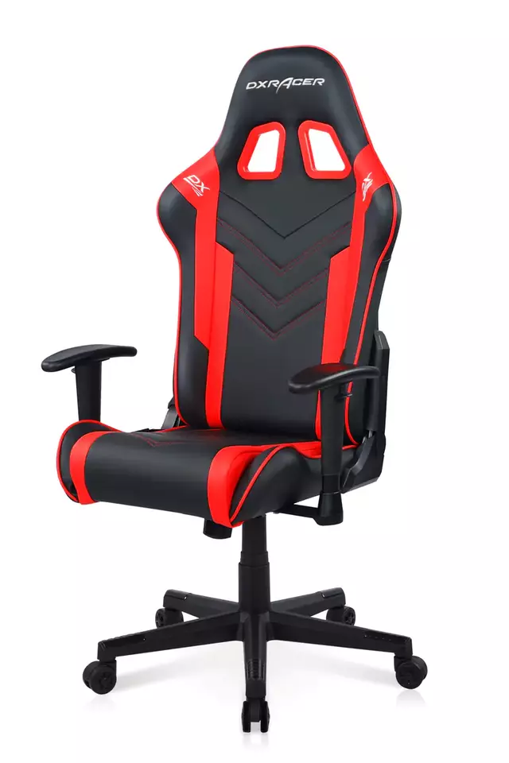

Silla Gamer Pro DXRacer F Series P132 Negro/Rojo
Silla gamer profesional DXRacer con chasis de acero reinforced, relleno de espuma de alta densidad moldeada en frío, reclinación hasta 135°, apoyabrazos 1D ajustables y cojines lumbar y cervical incluidos.
$229.990Comprar ahora